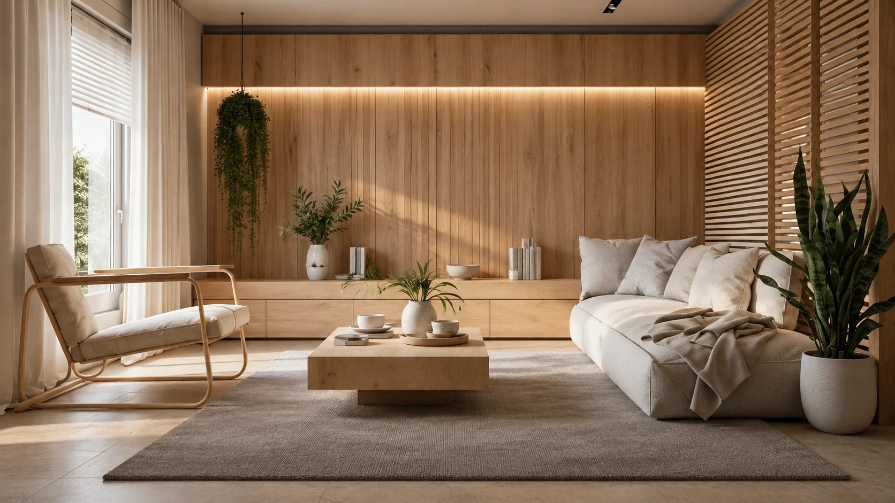

Construção e incorporação
em Rondonópolis.
Empreendimentos residenciais e comerciais.
Ver empreendimentosSobre a Unio
Construtora e incorporadora em Rondonópolis, Mato Grosso.
Suprême Villas & Gardens, Essence Business & Living e Vale dos Jacarandás.
36 casas
Vale dos Jacarandás
4 plantas
Suprême Villas & Gardens
Business & Living
Essence
Rondonópolis
Mato Grosso
Empreendimentos Unio
Suprême · Essence · Vale dos Jacarandás


03 / 04
Residencial,
negócios e lazer.
Unio Construtora e Incorporadora
Suprême
Villas & Gardens
Essence
Business & Living
Jacarandás
Condomínio horizontal
Suprême
Villas & Gardens
4 opções de planta
Suprême Villas & Gardens
Lago ornamental
Suprême Villas & Gardens
Perguntas
frequentes
Onde ficam os empreendimentos?
Rondonópolis, Mato Grosso.
Como agendar uma visita?
Onde consultar as unidades?
Há opções para alugar?